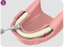
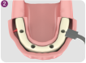
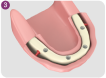
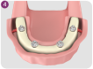
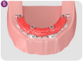
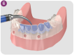
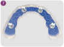
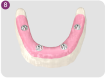

Regularize o rebordo alveolar

Perfuração cirúrgica concluída. Verificando a distância correta do
implante distal em relação ao forame mental com o instrumento de
planejamento espacial de 7 mm

Instalação de 4 implantes Neodent®, de acordo com sua indicação

Instalação dos pilares Neodent® correspondentes

Instalação de transfers de moldagem, ferulizados com resina acrílica

Posicionamento do guia multifuncional para obter a correlação
intermaxilar. Após a injeção de silicone fluido para a moldagem dos
tecidos moles

Remoção do guia multifuncional e instalação dos análogos aos
transfers de moldagem

Modelo de trabalho com gengiva artificial